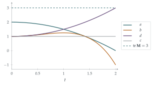

In this question, \(\mathbf{M}\) and \(\mathbf{N}\) are non-singular \(2 \times 2\) matrices.
The trace of the matrix \(\mathbf{M} = \begin{pmatrix} a & b \\ c & d \end{pmatrix}\) is defined as \(\operatorname{tr}(\mathbf{M}) = a + d\).
Prove that, for any two matrices \(\mathbf{M}\) and \(\mathbf{N}\), \(\operatorname{tr}(\mathbf{MN}) = \operatorname{tr}(\mathbf{NM})\) and derive an expression for \(\operatorname{tr}(\mathbf{M} + \mathbf{N})\) in terms of \(\operatorname{tr}(\mathbf{M})\) and \(\operatorname{tr}(\mathbf{N})\).
The entries in matrix \(\mathbf{M}\) are functions of \(t\) and \(\dfrac{\mathrm{d}\mathbf{M}}{\mathrm{d}t}\) denotes the matrix whose entries are the derivatives of the corresponding entries in \(\mathbf{M}\).
Show that \[\frac{1}{\det\mathbf{M}}\frac{\mathrm{d}}{\mathrm{d}t}(\det\mathbf{M}) = \operatorname{tr}\left(\mathbf{M}^{-1}\frac{\mathrm{d}\mathbf{M}}{\mathrm{d}t}\right).\]
In this part, matrix \(\mathbf{M}\) satisfies the differential equation \[\frac{\mathrm{d}\mathbf{M}}{\mathrm{d}t} = \mathbf{MN} - \mathbf{NM},\] where the entries in matrix \(\mathbf{N}\) are also functions of \(t\).
Show that \(\det\mathbf{M}\), \(\operatorname{tr}(\mathbf{M})\) and \(\operatorname{tr}(\mathbf{M}^2)\) are independent of \(t\).
In the case \(\mathbf{N} = \begin{pmatrix} t & t \\ 0 & t \end{pmatrix}\), and given that \(\mathbf{M} = \begin{pmatrix} A & B \\ C & D \end{pmatrix}\) when \(t = 0\), find \(\mathbf{M}\) as a function of \(t\).
In this part, matrix \(\mathbf{M}\) satisfies the differential equation \[\frac{\mathrm{d}\mathbf{M}}{\mathrm{d}t} = \mathbf{MN},\] where the entries in matrix \(\mathbf{N}\) are again functions of \(t\).
The trace of \(\mathbf{M}\) is non-zero and independent of \(t\). Is it necessarily true that \(\operatorname{tr}(\mathbf{N}) = 0\)?
The hook
Some of the deepest facts in physics are conservation laws: energy, momentum and angular momentum stay the same however complicated the motion. When a system has enough conserved quantities, its motion can be solved exactly; when it has too few, it can be chaotic.
This question shows a remarkable way of manufacturing conserved quantities. If a matrix changes in time according to \(\frac{\mathrm{d}\mathbf{M}}{\mathrm{d}t} = \mathbf{MN} - \mathbf{NM}\), then however wildly its entries vary, its trace and determinant, and hence its eigenvalues, never change. Such a pair \((\mathbf{M}, \mathbf{N})\) is called a Lax pair, after Peter Lax, who introduced the idea in 1968 to explain the astonishing behaviour of solitons, solitary waves that pass through each other unchanged.
Before you start
The expression \(\mathbf{MN} - \mathbf{NM}\) is called the commutator of \(\mathbf{M}\) and \(\mathbf{N}\). When is it zero? What is its trace, given part (i)?
It is zero exactly when \(\mathbf{M}\) and \(\mathbf{N}\) commute. And by part (i) its trace is \(\operatorname{tr}(\mathbf{MN}) - \operatorname{tr}(\mathbf{NM}) = 0\), always. That single fact is the beginning of every conservation law in the question.
Working it through
Stage 1 The trace
With \(\mathbf{M} = \begin{pmatrix} a & b \\ c & d \end{pmatrix}\) and \(\mathbf{N} = \begin{pmatrix} p & q \\ r & s \end{pmatrix}\), the diagonal entries of \(\mathbf{MN}\) are \(ap + br\) and \(cq + ds\), so \(\operatorname{tr}(\mathbf{MN}) = ap + br + cq + ds\). Swapping the roles of \(\mathbf{M}\) and \(\mathbf{N}\) gives \(pa + qc + rb + sd\), the same. Clearly \(\operatorname{tr}(\mathbf{M} + \mathbf{N}) = \operatorname{tr}\mathbf{M} + \operatorname{tr}\mathbf{N}\).■
Stage 2 The derivative of a determinant
Differentiate \(\det\mathbf{M} = ad - bc\) by the product rule. Then compute \(\mathbf{M}^{-1}\frac{\mathrm{d}\mathbf{M}}{\mathrm{d}t}\) and its trace, using \(\mathbf{M}^{-1} = \frac{1}{\det\mathbf{M}}\begin{pmatrix} d & -b \\ -c & a \end{pmatrix}\).
Writing dots for derivatives, \(\frac{\mathrm{d}}{\mathrm{d}t}\det\mathbf{M} = \dot ad + a\dot d - \dot bc - b\dot c\). And \[\mathbf{M}^{-1}\dot{\mathbf{M}} = \frac{1}{\det\mathbf{M}}\begin{pmatrix} d & -b \\ -c & a \end{pmatrix}\begin{pmatrix} \dot a & \dot b \\ \dot c & \dot d \end{pmatrix}\] has diagonal entries \(\frac{d\dot a - b\dot c}{\det\mathbf{M}}\) and \(\frac{-c\dot b + a\dot d}{\det\mathbf{M}}\). Their sum is \(\frac{1}{\det\mathbf{M}}\frac{\mathrm{d}}{\mathrm{d}t}\det\mathbf{M}\).■
Stage 3 Three conserved quantities
Take the trace of \(\dot{\mathbf{M}} = \mathbf{MN} - \mathbf{NM}\). For the determinant, use part (ii): what is \(\mathbf{M}^{-1}(\mathbf{MN} - \mathbf{NM})\)?
Trace: \(\frac{\mathrm{d}}{\mathrm{d}t}\operatorname{tr}\mathbf{M} = \operatorname{tr}\dot{\mathbf{M}} = \operatorname{tr}(\mathbf{MN}) - \operatorname{tr}(\mathbf{NM}) = 0\).
Determinant: by part (ii), \[\frac{1}{\det\mathbf{M}}\frac{\mathrm{d}}{\mathrm{d}t}\det\mathbf{M} = \operatorname{tr}\bigl(\mathbf{M}^{-1}(\mathbf{MN} - \mathbf{NM})\bigr) = \operatorname{tr}\mathbf{N} - \operatorname{tr}(\mathbf{M}^{-1}\mathbf{NM}) = \operatorname{tr}\mathbf{N} - \operatorname{tr}\mathbf{N} = 0,\] using part (i) in the form \(\operatorname{tr}\bigl(\mathbf{M}^{-1}(\mathbf{NM})\bigr) = \operatorname{tr}\bigl((\mathbf{NM})\mathbf{M}^{-1}\bigr) = \operatorname{tr}\mathbf{N}\).
Trace of the square: \(\operatorname{tr}(\mathbf{M}^2) = (\operatorname{tr}\mathbf{M})^2 - 2\det\mathbf{M}\) (see Section 7.4), which is constant because both terms are.■
Stage 4 An explicit solution
With \(\mathbf{N} = t\mathbf{I} + t\mathbf{E}\), where \(\mathbf{E} = \begin{pmatrix} 0 & 1 \\ 0 & 0 \end{pmatrix}\), compute \(\mathbf{MN} - \mathbf{NM}\) and write down the differential equations for \(a\), \(b\), \(c\), \(d\). Solve them in the order \(c\), then \(a\) and \(d\), then \(b\).
The part \(t\mathbf{I}\) commutes with everything, so \(\mathbf{MN} - \mathbf{NM} = t(\mathbf{ME} - \mathbf{EM})\). Now \(\mathbf{ME} = \begin{pmatrix} 0 & a \\ 0 & c \end{pmatrix}\) and \(\mathbf{EM} = \begin{pmatrix} c & d \\ 0 & 0 \end{pmatrix}\), so \[\dot a = -tc, \qquad \dot b = t(a - d), \qquad \dot c = 0, \qquad \dot d = tc.\] So \(c = C\) is constant; then \(a = A - \frac12Ct^2\) and \(d = D + \frac12Ct^2\); then \(\dot b = t(A - D - Ct^2)\), so \(b = B + \frac12(A - D)t^2 - \frac14Ct^4\). Therefore \[\mathbf{M} = \begin{pmatrix} A - \frac12Ct^2 & B + \frac12(A - D)t^2 - \frac14Ct^4 \\[0.5ex] C & D + \frac12Ct^2 \end{pmatrix}. \qed\] Check: the trace is \(A + D\), and the determinant is \((A - \frac12Ct^2)(D + \frac12Ct^2) - C\bigl(B + \frac12(A - D)t^2 - \frac14Ct^4\bigr) = AD - BC\), constant as promised (Figure 7.7.1).
Stage 5 A different equation
If \(\dot{\mathbf{M}} = \mathbf{MN}\), then \(\mathbf{N} = \mathbf{M}^{-1}\dot{\mathbf{M}}\), and by part (ii) \(\operatorname{tr}\mathbf{N}\) is the logarithmic derivative of \(\det\mathbf{M}\). Can the trace of \(\mathbf{M}\) stay constant while its determinant changes?
Certainly. Take \(\mathbf{M} = \begin{pmatrix} 1 & t \\ t & 1 \end{pmatrix}\) for \(|t| < 1\) (where \(\det\mathbf{M} = 1 - t^2 \neq 0\)). Its trace is constantly \(2\). Define \(\mathbf{N} = \mathbf{M}^{-1}\dot{\mathbf{M}}\), so that \(\dot{\mathbf{M}} = \mathbf{MN}\): \[\mathbf{N} = \frac{1}{1 - t^2}\begin{pmatrix} 1 & -t \\ -t & 1 \end{pmatrix}\begin{pmatrix} 0 & 1 \\ 1 & 0 \end{pmatrix} = \frac{1}{1 - t^2}\begin{pmatrix} -t & 1 \\ 1 & -t \end{pmatrix},\] which is non-singular, with \(\operatorname{tr}\mathbf{N} = \frac{-2t}{1 - t^2} \neq 0\) for \(t \neq 0\). So no, \(\operatorname{tr}\mathbf{N}\) need not be zero.■

Looking back
The trace of a commutator is zero. From \(\operatorname{tr}(\mathbf{MN}) = \operatorname{tr}(\mathbf{NM})\), every conservation law followed.
Logarithmic derivatives. Part (ii) turned the derivative of a determinant into a trace, which is linear and easy to handle.
Check conservation in the explicit solution. The formula for \(\mathbf{M}(t)\) was checked by confirming that its trace and determinant are constant.
What’s really going on
In 1834 the Scottish engineer John Scott Russell followed, on horseback, a solitary wave travelling along the Union Canal near Edinburgh for over a mile without losing its shape. Such waves are described by the Korteweg–de Vries (KdV) equation, and in the 1960s computer experiments by Norman Zabusky and Martin Kruskal showed that two of these “solitons” can collide and emerge unchanged, as if they were particles. Explaining this needed infinitely many conserved quantities. Peter Lax showed in 1968 that the KdV equation can be written as \(\dot L = LP - PL\) for a pair of differential operators \(L\) and \(P\); then, exactly as in this question, the eigenvalues of \(L\) are conserved, and they provide the infinitely many conservation laws. Systems with a Lax pair are called integrable, and they are among the few nonlinear systems that can be solved exactly.
Isospectral flows
Since the trace and determinant of \(\mathbf{M}\) determine its characteristic polynomial \(\lambda^2 - (\operatorname{tr}\mathbf{M})\lambda + \det\mathbf{M}\), the eigenvalues of \(\mathbf{M}\) do not change with time. The flow \(\dot{\mathbf{M}} = [\mathbf{M}, \mathbf{N}]\) moves \(\mathbf{M}\) around inside the set of matrices with fixed eigenvalues. In fact, the solution is always of the form \(\mathbf{M}(t) = \mathbf{S}(t)^{-1}\mathbf{M}(0)\mathbf{S}(t)\) for some invertible \(\mathbf{S}(t)\): the matrix stays similar to its starting value. The same idea runs through physics: in quantum mechanics, an observable \(\mathbf{A}\) evolves by \(\frac{\mathrm{d}\mathbf{A}}{\mathrm{d}t} = \frac{\mathrm{i}}{\hbar}[\mathbf{H}, \mathbf{A}]\), where \(\mathbf{H}\) is the energy, so anything that commutes with the energy is conserved.
Jacobi’s formula
Part (ii) holds for invertible matrices of any size and is called Jacobi’s formula. It is safest written without the logarithm, as \(\frac{\mathrm{d}}{\mathrm{d}t}\det\mathbf{M} = \det\mathbf{M}\,\operatorname{tr}\bigl(\mathbf{M}^{-1}\dot{\mathbf{M}}\bigr)\), because \(\det\mathbf{M}\) may be negative; the logarithmic form \(\frac{\mathrm{d}}{\mathrm{d}t}\ln\det\mathbf{M} = \operatorname{tr}\bigl(\mathbf{M}^{-1}\dot{\mathbf{M}}\bigr)\) needs \(\det\mathbf{M} > 0\) (or \(\ln|\det\mathbf{M}|\) in general). A consequence: if \(\dot{\mathbf{M}} = \mathbf{AM}\) for a constant matrix \(\mathbf{A}\), then \(\det\mathbf{M}(t) = e^{t\operatorname{tr}\mathbf{A}}\det\mathbf{M}(0)\). In the study of differential equations this tells you how volumes in phase space grow or shrink; for the equations of classical mechanics the trace is zero and volume is preserved, a result known as Liouville’s theorem.
The thinking skill
When something evolves, look for quantities built from it that stay constant. They constrain the motion and often reveal its structure.
Here the trace and determinant were conserved because the rate of change was a commutator. In mechanics, conserved quantities come from symmetries (Noether’s theorem), and finding them is often the first step in solving a problem.
Try this next
Check the solution. Verify by differentiating that the matrix \(\mathbf{M}(t)\) in Stage 4 satisfies \(\dot{\mathbf{M}} = \mathbf{MN} - \mathbf{NM}\).
Similarity. Show that if \(\mathbf{M}(t) = \mathbf{S}^{-1}\mathbf{M}_0\mathbf{S}\), where \(\mathbf{M}_0\) is constant and \(\mathbf{S}(t)\) satisfies \(\dot{\mathbf{S}} = \mathbf{SN}\), then \(\dot{\mathbf{M}} = \mathbf{MN} - \mathbf{NM}\). (Hint: \(\frac{\mathrm{d}}{\mathrm{d}t}\mathbf{S}^{-1} = -\mathbf{S}^{-1}\dot{\mathbf{S}}\mathbf{S}^{-1}\).)
Volume growth. Let \(\mathbf{M}(t) = \begin{pmatrix} e^{2t} & 0 \\ 0 & e^{-t} \end{pmatrix}\). Find \(\mathbf{N}\) with \(\dot{\mathbf{M}} = \mathbf{MN}\), and check that \(\frac{\mathrm{d}}{\mathrm{d}t}\ln\det\mathbf{M} = \operatorname{tr}\mathbf{N}\).
Higher powers. Show directly that \(\frac{\mathrm{d}}{\mathrm{d}t}\operatorname{tr}(\mathbf{M}^k) = 0\) for every positive integer \(k\) when \(\dot{\mathbf{M}} = \mathbf{MN} - \mathbf{NM}\).
Further reading
P. G. Drazin & R. S. Johnson, Solitons: An Introduction (Cambridge University Press). The standard undergraduate introduction, including Lax pairs.
Thierry Dauxois & Michel Peyrard, Physics of Solitons (Cambridge University Press). Includes the story of Scott Russell’s wave.
Dwight Neuenschwander, Emmy Noether’s Wonderful Theorem (Johns Hopkins University Press). How symmetries give conservation laws.